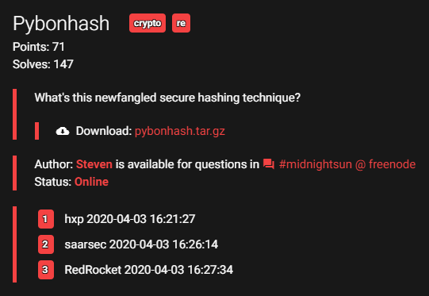
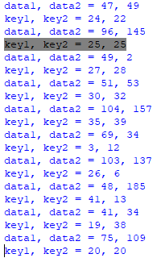

Midnightsun CTF 2020¶
Giải này có 4 bài crypto thì ta làm ra một bài pyBonHash, còn bài rsayay là tham khảo trên mạng. Sau đây là bài viết của ta.
pyBonHash¶

Hình 4 Description¶
Download pybonhash.tar.gz.
Đề cho ta file hash.txt (là ciphertext) và pybonhash.cpython-36.pyc. File pyc là file python đã compile nên ta không thể đọc được.
Trên mạng có khá nhiều trang decompiler file pyc, chẳng hạn ta dùng trang https://www.toolnb.com/tools-lang-en/pyc.html. Decompile file pyc của đề ta được file python với nội dung như sau:
# uncompyle6 version 3.5.0
# Python bytecode 3.6 (3379)
# Decompiled from: Python 2.7.5 (default, Aug 7 2019, 00:51:29)
# [GCC 4.8.5 20150623 (Red Hat 4.8.5-39)]
# Embedded file name: pybonhash.py
# Compiled at: 2020-03-28 21:11:38
# Size of source mod 2**32: 1017 bytes
import string, sys, hashlib, binascii
from Crypto.Cipher import AES
from flag import key
if not len(key) == 42:
raise AssertionError
data = open(sys.argv[1], 'rb').read()
if not len(data) >= 191:
raise AssertionError
FIBOFFSET = 4919
MAXFIBSIZE = len(key) + len(data) + FIBOFFSET
def fibseq(n):
out = [0, 1]
for i in range(2, n):
out += [out[(i - 1)] + out[(i - 2)]]
return out
FIB = fibseq(MAXFIBSIZE)
i = 0
output = ''
while i < len(data):
data1 = data[(FIB[i] % len(data))]
key1 = key[((i + FIB[(FIBOFFSET + i)]) % len(key))]
i += 1
data2 = data[(FIB[i] % len(data))]
key2 = key[((i + FIB[(FIBOFFSET + i)]) % len(key))]
i += 1
tohash = bytes([data1, data2])
toencrypt = hashlib.md5(tohash).hexdigest()
thiskey = bytes([key1, key2]) * 16
cipher = AES.new(thiskey, AES.MODE_ECB)
enc = cipher.encrypt(toencrypt)
output += binascii.hexlify(enc).decode('ascii')
print(output)
Độ dài của key là \(42\), và độ dài data phải lớn hơn hoặc bằng \(191\). Hàm fibseq không khó nhận ra mục đích là tạo dãy số Fibonacci.
FIB là dãy số Fibonacci tới số hạng thứ MAXFIBSIZE. Giờ tới phần mã hóa. Khởi gán i = 0. Trong mỗi lặp ta có:
data1: lấy data ở vị tríFIB[i] % len(data);key1: lấy key ở vị trí(i + FIB[FIBOFFSET + i]) % len(key);tăng
ilên \(1\);data2vàkey2tính giốngdata1vàkey1;tăng
ilên \(1\);toencryptlà mã hash md5 củabytes([data1, data2]);thiskeylà key tạo ra từbytes([key1, key2])lặp lại \(16\) lần;sau khi
toencryptđược mã hóa bởi AES ở ECB, dùng khóa làthiskey, ciphertext được lưu vàoenc;outputghép vào sau ciphertext đã được chuyển thành dạng hexa.
Ngừng đọc và suy nghĩ: khá là lung tung và có vẻ như việc phá AES là bất khả thi!!! Đúng không nhỉ?
Ở đây, len(key) = 42 là cố định, và ta để ý thấy mỗi lần lặp cần hai vị trí trong data nên chắc chắn len(data) = 192.
Đầu tiên, cách lấy index của data1, key1 (data2 và key2 tương tự) làm ta thấy rất "hoang mang", không biết có tính chất gì không nhỉ? Thử code một đoạn lấy index xem sao.
def fibseq(n):
out = [0, 1]
for i in range(2, n):
out += [out[(i - 1)] + out[(i - 2)]]
return out
FIB = fibseq(4919 + 42 + 192)
i = 0
while i < 192:
data1 = FIB[i] % 192
key1 = (i + FIB[4919 + i]) % 42
i += 1
data2 = FIB[i] % 192
key2 = (i + FIB[4919 + i]) % 42
i += 1
print("data1, data2 = {0}, {1}".format(data1, data2))
print("key1, key2 = {0}, {1}".format(key1, key2))
Ta để ý thấy một số vị trí khá thú vị như dưới đây:

Index của key1 và key2 trùng nhau. Vì vậy, thay vì phải giải mã từ AES rồi crack ngược md5 sao ta không ... duyệt vét cạn nó luôn nhỉ? Đó chính là ý tưởng của ta.
Ta sẽ bắt đầu từ những vị trí mà index của key1 bằng index key2.
Ta có index data1 và data2 rồi (code ở trên) thì ta chỉ cần duyệt vét cạn xem giá trị ở data1 và data2 là gì, và với key_s nào sẽ cho ra ciphertext khớp với đề cho.
Khi tìm được key_s thì ta lưu lại giá trị vào đúng index đó trong key ban đầu.
Tiếp theo, khi ta bắt gặp vị trí mà index key1 khác index key2, nếu ta đã giải ra key1 hoặc key2 thì ta làm động tác duyệt vét cạn tương tự cho key còn lại chưa giải ra.
Sau đây là hàm duyệt vét cạn:
def find_match(ciphertext, knownkey = 65, hasother = 0):
# hasother = 0 when it doens't have other
# hasother = 1 when knownkey is behind key
# hasother = -1 when knowkey is before key
for data1 in range(128):
for data2 in range(128):
tohash = bytes([data1, data2])
toencrypt = hashlib.md5(tohash).hexdigest().encode()
for key in range(32, 128):
if hasother == 1:
thiskey = bytes([key, knownkey]) * 16
elif hasother == -1:
thiskey = bytes([knownkey, key]) * 16
else:
thiskey = bytes([key, key]) * 16
cipher = AES.new(thiskey, AES.MODE_ECB)
enc = cipher.encrypt(toencrypt)
# print(binascii.hexlify(enc), text)
if ciphertext == binascii.hexlify(enc):
print("\t\tFound data1, data2, key = {0}, {1}, {2}".format(data1, data2, key))
return (data1, data2, key)
Lưu ý: khi giải ta vét từ \(0\) tới \(256\) rất lâu nhưng khi đã giải xong thì ta mới phát hiện key và data đều là ký tự in được nên ở đây ta đưa code chạy "ít trâu bò" hơn.
Hàm này ta nhận tham số là ciphertext (lấy từ file hash.txt), knownkey trong trường hợp có hai key khác nhau (default là \(65\)) và hasother nếu có hai key (default bằng \(0\) khi hai key giống nhau).
Ta encrypt y như đề bài và so sánh kết quả với ciphertext, nếu đúng thì trả về data1, data2 và key.
Ta cần lưu lại index của data1, data2 và key để lưu kết quả của hàm find_match về đúng vị trí của nó.
Ta tận dụng hàm ta code ở trước và tạo một số mảng để lưu index lẫn kết quả:
plaintext = [-1] * 192
keyfound = [-1] * 42
keyindex = []
dataindex = []
FIB = fibseq(MAXFIBSIZE)
i = 0
while i < 192:
data1_idx = FIB[i] % 192
key1_idx = (i + FIB[FIBOFFSET + i]) % 42
i += 1
data2_idx = FIB[i] % 192
key2_idx = (i + FIB[FIBOFFSET + i]) % 42
i += 1
keyindex.append((key1_idx, key2_idx))
dataindex.append((data1_idx, data2_idx))
Xử lý nào!
while -1 in keyfound:
for k in range(len(keyindex)):
print(keyindex[k])
if keyindex[k][0] == keyindex[k][1]:
if keyfound[keyindex[k][0]] != -1: continue
plaintext[dataindex[k][0]], plaintext[dataindex[k][1]], keyfound[keyindex[k][0]] = find_match(data[k * 64: (k + 1) * 64])
else:
if keyfound[keyindex[k][0]] != -1 and keyfound[keyindex[k][1]] == -1:
plaintext[dataindex[k][0]], plaintext[dataindex[k][1]], keyfound[keyindex[k][1]] = find_match(data[k * 64: (k + 1) * 64], keyfound[keyindex[k][0]], -1)
elif keyfound[keyindex[k][0]] == -1 and keyfound[keyindex[k][1]] != -1:
plaintext[dataindex[k][0]], plaintext[dataindex[k][1]], keyfound[keyindex[k][0]] = find_match(data[k * 64: (k + 1) * 64], keyfound[keyindex[k][1]], 1)
else: continue
print(plaintext, keyfound, dataindex[k])
Việc chạy mất thời gian khá lâu, và flag chính là key.
Lưu ý: trong quá trình chạy người đọc sẽ thấy plaintext đôi khi không khớp, ví dụ plaintext[2] sẽ có nhiều giá trị. Đó là do mã hash md5 bị đụng độ, key sẽ không thay đổi.
Key tìm được sẽ là
`
[109, 105, 100, 110, 105, 103, 104, 116, 123, 120, 119, 74, 106, 80, 119, 52, 86, 112, 48, 90, 108, 49, 57, 120, 73, 100, 97, 78, 117, 122, 54, 122, 84, 101, 77, 81, 49, 119, 108, 78, 80, 125]
`
rsa_yay¶
while True:
p = random_prime(2**512)
q = ZZ(int(hex(p)[::-1], 16))
if q.is_prime():
break
# hex(p*q)
# '7ef80c5df74e6fecf7031e1f00fbbb74c16dfebe9f6ecd29091d51cac41e30465777f5e3f1f291ea82256a72276db682b539e463a6d9111cf6e2f61e50a9280ca506a0803d2a911914a385ac6079b7c6ec58d6c19248c894e67faddf96a8b88b365f16e7cc4bc6e2b4389fa7555706ab4119199ec20e9928f75393c5dc386c65'
# hex(ciphertext)
# '3ea5b2827eaabaec8e6e1d62c6bb3338f537e36d5fd94e5258577e3a729e071aa745195c9c3e88cb8b46d29614cb83414ac7bf59574e55c280276ba1645fdcabb7839cdac4d352c5d2637d3a46b5ee3c0dec7d0402404aa13525719292f65a451452328ccbd8a0b3412ab738191c1f3118206b36692b980abe092486edc38488'
Nếu biết \(k\) bit cao nhất của \(p\) và \(q\), gọi là \(ph\) và \(qh\) thì ta có chặn
Khi đó, ta brute \(12\) bit thấp nhất của \(p\) và tính nghịch đảo của từng trường hợp trong modulo \(2^{12}\). Nghịch đảo này chính là \(12\) bit thấp nhất của \(q\) và suy ra được \(12\) bit cao nhất của \(p\) và \(q\).
from gmpy2 import *
import binascii
n = 0x7ef80c5df74e6fecf7031e1f00fbbb74c16dfebe9f6ecd29091d51cac41e30465777f5e3f1f291ea82256a72276db682b539e463a6d9111cf6e2f61e50a9280ca506a0803d2a911914a385ac6079b7c6ec58d6c19248c894e67faddf96a8b88b365f16e7cc4bc6e2b4389fa7555706ab4119199ec20e9928f75393c5dc386c65
cipher = 0x3ea5b2827eaabaec8e6e1d62c6bb3338f537e36d5fd94e5258577e3a729e071aa745195c9c3e88cb8b46d29614cb83414ac7bf59574e55c280276ba1645fdcabb7839cdac4d352c5d2637d3a46b5ee3c0dec7d0402404aa13525719292f65a451452328ccbd8a0b3412ab738191c1f3118206b36692b980abe092486edc38488
def reverse_hex(x,n):
y = 0
for i in range(n):
y = y*16 + x % 16
x //= 16
return y
cur = []
# Find all cases for lowest 12 bits
for i in range(1, 4096, 2): # i is lowest 12 bits of p
t = pow(i, -1, 4096) * (n % 4096) % 4096 # t is lowest 12 bits of q
assert t * i % 4096 == n % 4096
t2 = reverse_hex(t,3) # t2 is highest 12 bits of q
i2 = reverse_hex(i,3) # i2 is highest 12 bits of p
l = i2 * t2 << (4 * 125 * 2)
r = (i2 + 1) * (t2 + 1) << (4 * 125 * 2)
if l <= n <= r: # check where n is in the range
cur.append(i)
# Current digit (in hex)
for c in range(4, 65):
nc = []
mod = 16**c
for x in cur:
for y in range(16):
i = x + y * 16**(c-1) # i is lowest 4c bits of p
t = pow(i, -1, mod) * (n % mod) % mod # t is lowest 4c bits of q
assert t*i%mod==n%mod
t2 = reverse_hex(t, c) # t2 is highest 4c bits of q
i2 = reverse_hex(i, c) # i2 is highest 4c bits of p
l = i2 * t2 << (4 * (128 - c) * 2)
r = (i2 + 1) * (t2 + 1) << (4 * (128 - c) * 2)
if l <= n <= r: # check where n is in the range
nc.append(i)
cur=nc
# Find real solution
c = 64
mod = 16**c
for i in cur:
t = pow(i, -1, mod) * (n % mod) % mod
assert t * i % mod == n % mod
t2 = reverse_hex(t, c)
i2 = reverse_hex(i, c)
p = t2 << 256 | i
q = i2 << 256 | t
if p * q == n:
break
e = 65537
d = pow(e, -1, (p - 1) * (q - 1))
o = pow(cipher, d, p*q)
print(binascii.unhexlify(hex(o)[2:]))
# b'midnight{d1vid3_and_c0nqu3r}x/\xda\xc9\xc4y\xb4\xc5!\x14\xc4p\xfal<a\x00\xd9m\xae\xb0k\xf8\xe0\xb31\xd9\xe6J\xcd\xaf|\x0b\xde6\xe2\xe8|>\xb8\xa2\x03\xa6\x92\xf6\xf3i\x10\xbb\x04\xc4Ha\x83d\x9d}6S\x88K\xba\tp\xed\xa3\xe2\xaf3\xc9\xae\xa9\xafF\xe5\x0c?\xae\x99\xae\x12\xb1\x9fO\xd2\xbc\x86\xedi\xab\xfc\xe7I\x82\xba\xfee\xba\xf0\xed'